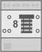
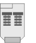
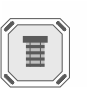
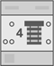

Blinds actuators properties
The listed properties are displayed in the Hardware and network editor > Inspector window > Properties tab when the device with KNX PL-Link is selected in the Device view tab.
N 543D51 | RL 521/23 | RS 520/23 | UP 520/03 | UP 520/13 |
 |  |  | ||
N 543D31 | N 545D31 | RL 524D23 |
|
|
 |
|
|
|

General and Catalog information
The General and Catalog Information group provides information about the device.
Property | Description | Default value |
|---|---|---|
Mode | Mode shows the network mode of the device. Read only. | KNX PL-Link |
Name | Name is a text field to enter the name of the device. The name is used to identify the device in the device view. | Depends on other settings. |
Comment | Comment is a free text field to enter any helpful information on the device. | - |
Power consumption | Power consumption shows the power the device consumes. Read only. Unit: [mA] The value is used to calculate the remaining power of the KNX rail. See also power consumption and supply on KNX rail of PXC3 or KNX rail of DXR2. | Depends on the device type. |
Short designation | Short designation shows a short description of the device. Read only. | Depends on the device type. |
Order number | Order number shows the device type. Read only. | Depends on the device type. |
Version | Version shows an internal version of the device. Read only. | - |
Description | Description shows a short description of the device. Read only. | Depends on the device type. |
Device information
The Device information group provides information about the device and settings valid for all channels.
Property | Description | Default value |
|---|---|---|
Device address (KNX) | Device address (KNX) shows the fixed standard address for devices with KNX PL-Link. Read only. | 255 |
Serial number used | Serial number used defines the method used for device identification.
|
|
Serial number | Serial number defines the serial number used for device identification. Serial number is only enabled and relevant if Serial number used is enabled. | 000000000000 |
 : The serial number entered in the text field Serial number is used for device identification.
: The serial number entered in the text field Serial number is used for device identification. : Device identification has to be done in Web interface. The device has to be in programming mode for Web interface to perform the device identification.
: Device identification has to be done in Web interface. The device has to be in programming mode for Web interface to perform the device identification.Alarming
Property | Description | Default value |
|---|---|---|
Alarming |
|
|
Functions
The functions table in the Channel Overview provides an overview of the channels of the device. Depending on the device the values in the table are read only or can be edited. The available types depend on the device and the application function.
Property | Description |
|---|---|
Name | Name of the channel. Read only. |
Type | Name of the function. |
Zone | Part of the geographical address of the device. Range: 1...126 |
Room | Part of the geographical address of the device. Range: 1...63 |
Subzone | Part of the geographical address of the device. Range: 1...15 Note |
Activate | Activate defines if the channel is activated.
|
The functions are described briefly in the table below.
Type | Description | Number of channels used |
|---|---|---|
System | Device information that is mapped to the BACnet object peripheral device (PrphDev). Read only. | 1 |
Some of the functions can be configured. The properties of those functions are described below in order of their appearance in the drop-down list.
Sunblind actuator basic (SAB)
Property | Description | Default value |
|---|---|---|
Move-down time 1) | Move-down time defines the time the actuator takes to move the blind from the upper to the lower end position. Range: | 120 |
Move-up time 1 | Move-up time defines the time the actuator takes to move the blind from the lower to the upper end position. Range: | 120 |
Additional move time 1) | Additional move time defines a time that is added to the Move-up time or the Move-down time when the blind moves towards one of the end positions. Additional move time ensures that moving will be stopped by the end contact. Range: | 5 |
Number of slat steps 1) | Number of slat steps defines the number of steps needed to move the slats from the closed position to the open position. Range: | 6 |
Maximum slats move time 1) | Maximum slats move time defines the time the actuator takes to move the slats from the closed to the open position. Range: | 1000 |
Power return mode | Power return mode defines the behavior of the actuator when power returns after a power failure or when the application is restarted.
|
|
Power failure mode | Power failure mode defines the behavior of the actuator if the power fails.
|
|
Enable blinds mode | Enable blinds mode defines if the actuator functions as a blinds actuator or as a shutter actuator.
|
|
Wind alarm reaction | Wind alarm reaction defines the behavior of the actuator in case of a wind alarm.
|
|
Wind alarm timeout | Wind alarm timeout defines the timeout period for receiving process data on the input WindAlarm.
|
|
End position dead time | End position dead time defines the time before the state of the end position switch is read after the blind has left the end position. The delay is needed because the end position switch does not close immediately when the blind leaves the end position. Range: | 500 |
Slat position at end position down | Slat position at end position down defines the angle of the slats at the lower end position if the blind moved without interruption from the upper to the lower end position. Range: 0: slats are completely opened. 100: slats are completely closed. | 100 |
Prio forced control | Prio forced control sets the priority for forced control commands. Range: | 6 |
Predefined positions1) | Values for the predefined positions P0 through P4 are configured using the positioning table. Each position is defined by 2 values:
P0: Closed: P1: Visual protection P2: Anti-glare, sun position low P3: Anti-glare, sun position high P4: Open | 100 |
 3...300 [s]
3...300 [s] up: The actuator moves the blind up.
up: The actuator moves the blind up.1) If the subsystem specific extension KNX PL-Link: SAB (BlsOut - subsystem-specific extension) of the BACnet object Blinds output object (BlsOut) is enabled, you have to configure this property in the BACnet objects editor or in Web interface.